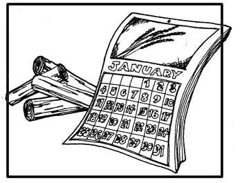
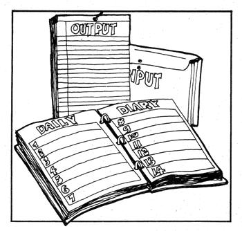
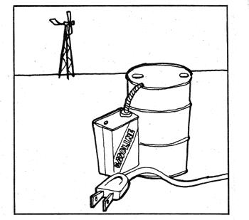

That old save "Write what you know°' may be a cliche by this time, but it's still a pretty good rule for authors and it gets broken more often than it should in the literature of the back to the land movement. A happy exception is a new book from Rodale Press: The Manual of Practical Homesteading by John Vivian. John and his wife, Louise, are former city slickers who've spent the last seven years learning the hard way how to live on their land in central Massachusetts and the fruits of their experience are packed solidly into a 340 page guide that really lives up to its name. No one system is right for all areas or all individuals, of course, but the Vivians' gardening, stock raising, and food preservation techniques make a lot of sense for large portions of the U.S. and Canada and the couple's down to earth approach to their new lifestyle is a good model for settlers anywhere.
If the following excerpt whets your appetite for the whole book and we hope it does The Manual of Practical Homesteading is available for $8.95 from Rodale Press, from local bookstores, or from MOTHER'S Bookshelf.
With the end of holiday excitement and activity the tree goes out for the birds, the crust of the last wedge of pumpkin pie has become so soggy it becomes a treat for Horrible Pig, and the homestead slides into a new year. Like most everyone, we find the first few days of January a time for reflection and planning for the coming season. We begin gathering up the receipts and records and when the first seed catalogs arrive I find I'm beginning to plan gardens. But these have become fairly routine tasks by now and most January evenings in front of the living room fire are taken up in discussing the major changes we hope to make on the homestead and our life on the land.
It seems that as time goes by, the projects that we undertake are more and more decided for us by national and world events. Without the recent energy crisis, resulting in skyrocketing costs of power, our planning for an independent water or wind powered electricity generator would be a lot more iffy than it is. So would plans for a log splitter, a wood burning kiln to replace Louise's electric model, and a good deal more. It seems that the pace and severity of change keeps picking up with every passing month, this crisis or that shortage appearing suddenly to make dramatic change in all our lives. With each big change, of course, a homesteader's plans and priorities are affected, though not so drastically as if we were still townspeople. So, after the greenhouse is completed, I really can't say which project will be the next to be carried out. It depends on which will appear to make the most valuable contribution to the ever expanding partnership between us arid the !and.
Our basic goal is to become as totally self sufficient as we can, as free from the money economy and the increasingly severe difficulties of living in a world with too many people and too few resources. Our planning envisions a future a scenario, the futurists call it where the United States will have run out of just about every resource but the most valuable, a proportion of the world's arable land that far exceeds our proportion of the world population. Louise and I agree with those economists and natural scientists who predict that within the next few decades the United States will become one huge farm producing (probably from improved soybeans) the protein to feed a hungry world of perhaps twice today's human population.
This means that man's most elemental need, food, will increase in economic value to heights the world has never even imagined; perhaps a bushel of wheat will buy a barrel of crude oil or a new wool suit of clothes. In such a world small scale farming would again be a viable way of life for millions of American families, and we want to be one of them. Even if this scenario is dead wrong, we want to be able to produce most of our needs here on the homestead; no matter what the future holds for the world, we are convinced that the capacity for self-sufficiency and independence, even if unexercised, is the surest guarantee that life will continue to be good on our
little corner of Creation. So, though future plans and projects are pretty mundane in themselves, each is part of a still evolving plan to establish a self-contained and environmentally sound "homestead of the future."
So much for generalities. The first item on the agenda is a very down to earth building, a greenhouse. We've carried lettuce through most of the winter in the cold frame, but salads get pretty skimpy by January. We want to have a complete winter salad garden with lettuce, cucumbers, and tomatoes all winter long. To date I've picked up some big fluorescent lights, a good neighbor has supplied a pile of old storm sash, and the plans are drawn up. Next winter we'll have it cranked up, insulated with sheets of plastic over glass and heated through a cellar window. I'm sure there will be some mistakes, but with experience we should never again have to put up with lettuce trucked all the way from California or a tomato that was turned red (not ripened) with chemicals.
On the home heat front I plan to build a combination log splitter and cordwood saw that will speed the wood garnering process. The saw half of the unit will be similar to an antique a neighbor uses to cut his own wood, the splitter from a plan from Garden Way Research of Charlotte, Vermont. I doubt that we will completely discard the central heating unless the cost of heating oil or coal simply goes out of sight. But we have more wood stoves in our future. The little stove in the kitchen will go into my study/workroom as soon as we can find a bigger cookstove with a range and water reservoir. The main part of the house will be heated by one of the modern super-efficient wood or coal heaters such as the Ashley. So far we have reduced our original heating oil consumption by half with the two stoves. The coming heating season, plus two more, should see one tankful last through the winter and in time, as we increase the insulation and finish caulking up the old clapboards, and when the kids are old enough to keep their comforters on at night, we can go to all wood heat.
We are also following closely the developments in heating with sun power. Our winters are too cold, snowy, and overcast to let us rely exclusively on the solar heat units that have been tried in the Southwest and the Washington, D.C. area. But as more work goes into developing more efficient plants and better heat storage units, we'll begin experimenting. I'd estimate that in a couple of years, once the diapers are turned to dust cloths and milk-spilling and egg dropping become less frequent, we'll try heating our (greatly reduced) washing water supply with a solar heater. Then, in time, the south roof of the barn may host a covering of solar panels and half the lowest level of the barn will be changed from goat quarters to a hot water storage tank. With sun-heated water flowing through baseboard heaters to provide general home and cellar heat, and with wood stoves to really warm up rooms in use, we will pretty well be able to forget Exxon, Mobil, and the Arab oil sheiks for good.
There is no question that organically grown food is growing in popularity; here's proof if you need it: the cereal makers are all coming out with "natural" cereals containing whole grains and honey. They are no more organic or really natural than the half candy stuff they used to feature, but are an indication that things are changing. And if, as we expect, food prices continue to soar till small farms run by hand labor become economically sound once again, we will be in the forefront. I am already cutting wood from a partly clear acre-sized meadow a few hundred feet back into our woods, and in time we should have about three relatively level, clear acres for field crops. Some will continue to be used for growing grain for our livestock. The balance will go into the best cash producing crop we can grow organically with the fertilizers available. Concord grapes are one possibility. Everyone loves to make grape jelly and on the rare occasions we've seen the real Concords for sale the price was amazing.
Other possible crops include popcorn. I even dreamed up what to put on the bags: "All natural, old time popp'n corn. On the cob, in the shuck. Three (count 'em) or more varieties depending on the crop. Grown the organic way, pure, plain and simple." We'd grow a half-dozen different varieties of different colors and flavors. Of course the honey operation can be expanded and will be, if the good doctors can cure me of that sting allergy. Blueberries, the delicious little native variety, can be had for the digging. Strawberries will always be a favorite, and I don't see how we could go wrong with an expanded fruit orchard, perhaps featuring the increasingly popular old-fashioned varieties. And there is always the option to get into maple syrup making or expand the goat herd. Any of these would require a considerable investment it time and equipment, though, neither of which we have in excess. So we'll take it slow.
For our own needs, the farming plans are a bit more precise. We want to increase the sweet corn acreage so as to provide for our cornmeal needs, and next summer I plan to try several kinds of wheat for flour. Stock beets or mangels and Jerusalem artichokes will also get a trial as animal feeds; each reportedly produces tremendous crops, though I don't know how they will fare in our climate. To improve culture of root crops, I plan to build a raised planting bed. Old bridge timbers will make a frame approximately six by twelve feet in size and a foot and a half high. Into it will go equal proportions of rich composted rabbit droppings and hay, chopped maple leave, and crushed bottles. (The shredder-grinder does a great job of reducing bottles to sand-sized cutlet that contains nary a splinter. It does so well we use it in the town's glass recycling program.)
On the livestock side, Louise wants to develop a self perpetuating flock of geese both for food and sale. A pigeon loft will go in over the chicken house and this year or next we'll also try raising turkeys. The vets have pretty well eliminated the disease hazards that formerly made turkey raising hard in any event and impossible near a chicken flock. As soon as I can get the fence up, we'll run a young beef steer or two, and we have entertained the idea of trying to raise American bison, the plains buffalo. Now, don't laugh. They are half again more efficient feed converters than cattle, are much hardier, not as inclined to waste energy putting on fat, and the flavor is similar to beef; many consider it even better. Finally, we plan to develop a strain of homestead sized hogs. Laboratory scientists have bred them down as small as a big guinea pig. And I would a lot rather dress out two 100 pound hogs than one 250 or 300 pounder. Anyone know where to buy a bison, or sell a miniature pig?
I realize now. that the day we began keeping these records was the day we changed from folks who were just trying out an alternative lifestyle to serious and committed homesteaders. Through the early part of our ten-year transition from city to suburb to ex-urb and finally to self-sufficient all organic homestead, gardening was primarily recreation. The few precious hours spent working the soil offered a refreshing change from the drudgery of a nine to five city job. It didn't matter a bit how much the garden produced or what the food actually cost. We enjoyed picking flowers and eating what vegetables and fruit we wanted and enjoyed even more giving the surplus to non-gardening friends. Gardening was a hobby, and a fine hobby, too.
Not so any longer. To be sure, we still get great pleasure from the gardens, orchard, and animals. It is the genuine satisfaction of providing our most elemental needs through hours of hard, often unpleasant labor. The better the planning, the more efficient will be our use of time, so the more productive will be the land the the more satisfying the labor. Thus the detailed records.
It is no small task to collect all our records of last year's food production. In the rush of planting, harvesting, and storing, a lot of information has been scrawled on odd scraps of paper, the backs of seed packets, or the barn walls. The number of hay bales thrown down for the goats was recorded in notches cut in the old hand hewn beams of the loft, while sale and purchase receipts were "filed" everywhere from the glove compartment of the pickup to a nail in the wall beside the kitchen door. I collect this odd assortment of information, then sit down to transfer it to the permanent ledgers.
Through the year we try to keep up with the following four informal journals.
1. Daily Diary. In the ell the room connecting house and barn I keep a large appointment type calendar with space to write brief daily entries. On it each evening we jot down important weather information, non routine tasks performed, and really major events such as the arrival of the bluebirds.
2. Input records. A sheaf of papers, one for each crop or animal, is kept in a folder that travels all over the place with us. There we record all "inputs" made, such as planting information, animal breeding dates, etc. The papers get pretty dog eared by harvest time.
3. Output Records. This is a writing tablet hanging on a nail above the kitchen sink. Each day we enter details of the harvest so many ounces of spinach and from which garden plot and row, pounds of, milk from the goat, number of eggs, and so on.
4. Garden Plan. This is a drawing to scale of each garden showing which plants went where, planting and harvest dates, and other odd information such as which pieces of land received manure or row compost during the year. It shows the garden reality, vastly different from the plan lovingly designed and redesigned over the previous winter.
Through the late winter I transfer all these jottings to permanent records. Farm bureaus and the like sell elaborate forms for record keeping but mainly I just use plain writing paper. For each goat, for example, I make four vertical columns: the date on the left, followed by pounds of milk given that day, feed consumed, and finally vet or other costs. On the right margin I leave about a quarter page space for analysis or comments. It is good to know why a particular thing came about and the records give us the information which, with a little thinking, can help us learn from our mistakes or give ourselves a bit of a back pat for an earned good performance. For example, if the goat's record indicated a fall off in milk production in mid-August, the weather data might indicate a bad heat wave, the feed records might show that we had changed grain supplements, or the harvest records could show that we had slaughtered the last of her buck kids and she was feeling a little lonely.
The final step in record keeping is to tote it all up and figure the comparative value of the several farm operations. I use a hypothetical figure for our labor the "wages" we earn if you will. With the goat as an example, milk production for the year is totaled and multiplied times the price we'd pay for commercial cows' milk and cheese. To this is added similar values for meat and hides of kids slaughtered the meat valued at retail price of spring lamb, though we think it far tastier. From that I subtract the costs of any feed we had to buy, the market price of feed we grew, plus the depreciation costs on pertinent equipment the swinging windows in the goat pen, goat high fence, etc. The resulting figure, "profit" (or "loss") I guess you'd call it, is divided by the time spent milking and in general care; for the goats, about a quarter hour a day, which includes cleaning milking gear and an extra half hour for stall cleaning and maintenance on weekends.
The resulting figure, the "wage" I'm earning, varies with time and between various tasks. Low point to date has been a good dollar an hour "loss" to a top wage of ninety five cents an hour. Needless to say, we aren't getting rich. But figuring the cash value of homesteading labor isn't the point of our record keeping. If we were all that interested in money I would still be commuting to a city job. The records and "wage" figures are to give us a handle on how we are doing, to tell which activities might stand streamlining if we care to do so. So far the least "profitable" homesteading activity has been deer hunting. Each fall I spend the better part of two weeks hauling a recurved bow around our woods looking for deer and only rarely get a clear shot. Considering the cost of all the equipment, I lost about a dollar an hour. Theoretically the most "profitable" use of time would be picking watercress from the little brook across the road over $100 an hour assuming there was enough cress, which there isn't, and we were so inclined, which we aren't. Conventional economic wisdom would say we ought to give up deer hunting altogether, flood the upper pasture, and grow ten tons of watercress each year. I'd say that conventional economic wisdom is a lot of what's wrong with the world. What we value is the health, contentment, and independence we earn, not the money we are missing.
Ironic as it may seem, the inflation and other economic troubles of the mid-1970's promise to hit the "independent" homesteader harder than most city people. So, be forewarned. Louise and I worked long and hard to pare our cash needs to the very bone and suddenly it is the bone that has doubled and tripled in price.
Of course, we aren't much bothered by the rises in food prices that are so serious to townspeople, though it seems that the staples such as rice,, cooking oil, pepper, and such that we just can't hope to produce ourselves have gone up more than other food items. It is the other basic, essential areas of living cost that we cannot (or have chosen not to) do without that have all jumped in price petroleum products, electricity, medical insurance. I could go on, but won't.
These price rises affect everyone, but they hit the homesteader the hardest-they have hit us that way. The problem is that we have practically no flexibility to switch our spending around like someone in the conventional money economy. In effect, we are providing too many of our own needs to coast through this inflation without a care. For example, since we make our clothes and grow our food I can't delay buying a new suit or Louise can't switch from $1.00 a head fresh broccoli to a 20 cent can of green beans and use the savings to pay the electric company (whose bill charges have risen to about three times what they were just a couple of years ago). We have no choice but to come up with the cash; we can't reduce our consumption really because we've already cut it to the lowest level we care to accept. And that is the case with just about every bill we get; the item is essential to our way of life, we cannot do anything to reduce the amount we use and during the past two years the cash cost has doubled or tripled or worse. And the worst is yet to come.
Now, I'm not complaining. Louise can always turn out a double batch of hanging planters and fortunately there seem to be enough good folks willing to read what I have to say about gardening that I can cut down on bass fishing and spend more time in front of the typewriter. So all I'm saying is, before you go a homesteading, be sure you .can do more or less the same thing.
Before you take off for the country, double check your projections of cash income needs and triple check your source or sources. Compared with a decade ago I'd recommend boosting the priority you assign to getting free of such fixed costs as heating oil or electricity. Our one biggest cost these days is energy of all kinds gas for cars and tillers, heating oil and electricity for the depth of winter when the wood fires leave you singed fore and frozen aft. If we had it to do over (or if and when we move the homestead again to escape "civilization") we would place availability of alternative energy sources high on our list of priorities in a homestead location. Probably even higher than fertility of the soil, which can always be built up organically. But only nature can power an electricity generating windmill or waterwheel, and harnessing either wind or water on our place will be a real challenge,
For folks with no hard preference for homestead location I'd strongly suggest checking out Appalachia where hill country land is cheap, water is plentiful, and there are many places where you can dig your own coal from surface seams that are too small for commercial mining. Or you might want to stay close in to a town to reduce travel cost. Might even locate near a genuine city to have public transportation, medical clinics, and jobs. Even if it does mean loss of some of the joys of wilderness living (such as the whippoorwills which make sleeping through either dawn or dusk on spring evenings an impossibility and the deer which make themselves nuisances in our corn every fall).
So, please be forewarned. And do your income planning carefully and with an eye to an uncertain economic future in America and the world. But for heaven's sake don't let this warning discourage you. I can't think of anyone better prepared to cope with an uncertain future than a well dug in homesteader. Oil prices may soar or petroleum get scarce or run out so we either can't afford or can't get the gas to cook our eggs or the electricity to make freezing beans so quit and easy. But we'll always have the eggs. And the beans.
So, once again, join us in the homesteading life.
|
 |
 |
 |